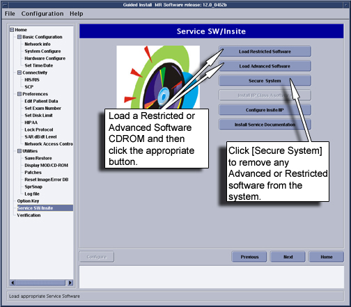

Proprietary to General Electric Company
Direction 5440000, Rev# 5
Signa HDxt Service Methods
Module Version 1.0, Version Date 6/26/07
Proprietary to General Electric Company |
| Required Persons | Preliminary Reqs | Procedure | Finalization |
|---|---|---|---|
| 1 | Not Applicable | 5 mins | Not Applicable |
This procedure shows how to install and un-install proprietary software. In addition, it shows how to secure a system before you leave a site that does not have a proprietary agreement. Installing proprietary software is done with the click of the mouse. A graphical user interface, or GUI, is used to direct you through the installation and un-installation of this software. In addition, this same GUI allows the site to be secured by clicking on a mouse button. The Install GUI is located on the service desktop.
| Last Revised: | June 26, 2007 |
| Condition | Reference | Effectivity |
|---|---|---|
If loading Service Software, an Advanced or Restricted Service Software CD-ROM is required. | - | - |
If loading Advanced Service Software, the Inhouse Service Key is required. If loading Restricted Service Software, A GE FE Service Key is required. | - | - |
If Advanced or Restricted software is re-loaded on a functioning system, ALL applicable Service Packs must be re-loaded. | - | - |
Under Guided Install, select [FE mode]. Select [Click here to start this tool]. The installTool window appears.
At the password prompt, type operator and press<Enter>. The Install menu appears.
Click [Service SW/Insite]. See Step for steps to load or remove proprietary software.
Illustration 1: Installing or Removing Proprietary Software

Once completed, exit the Install GUI.
No finalization steps.